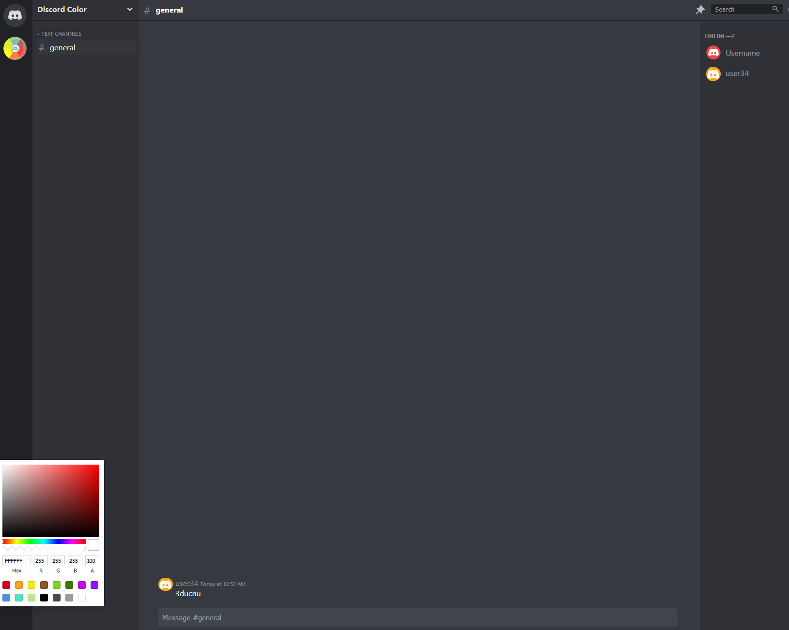

2018
2019
2019
2021
2018 – Creative Technologist Intern @ Northrop Grumman.
Jan 2019 – Communications & Web Development Intern @ AAAS.
May 2019 – Software Developer @ Pragmatics.
2021 – Software Engineer, 2 @ Booz Allen Hamilton.

Discolor App

Resume Version 2

George Mason University